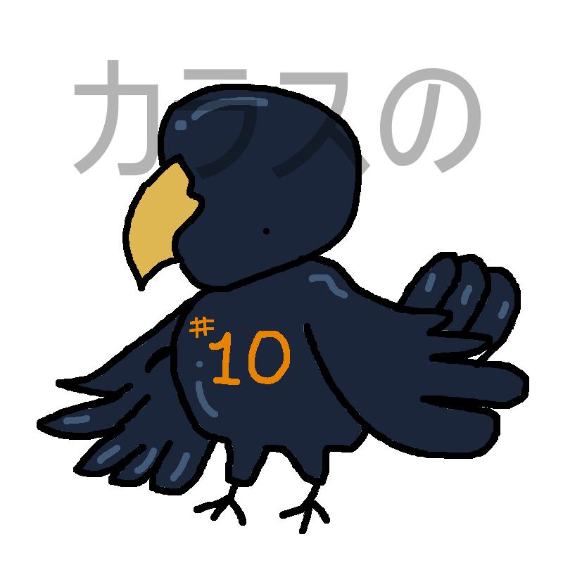
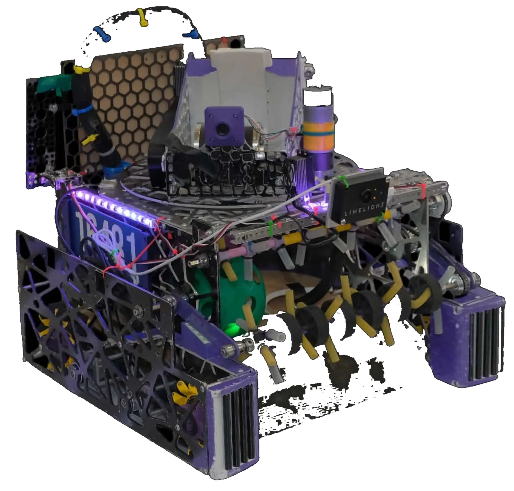

Route geometry
Build paths around scoring positions, field obstacles, timing, and robot orientation.

Mithilesshsoftware · robotics · hardware
FTC · Robo Racers 16481
I lead Robo Racers software: autonomous, localization, telemetry, tuning, and field debugging.

Competition highlights
Recent Robo Racers recognition, from NorCal to Chicago.
Recognition for the team’s control system and software work.
Premier Event recognition in Long Beach.
CRI recognition for scouting, match strategy, and game analysis.
Recognition for connection and outreach across the STEM community.
Also Finalist Alliance Captain at the event.
Recognition for engineering process and documentation.
How I work
The goal is repeatable motion on the real robot — not one lucky run.
Build paths around scoring positions, field obstacles, timing, and robot orientation.
Adjust localization, movement constants, and path behavior until commands match the physical chassis.
Use pose, heading, path state, and timing data to understand why a run succeeded or failed.
The target is repeatability: the same autonomous behavior run after run, not one lucky demo.